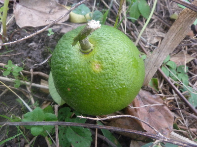
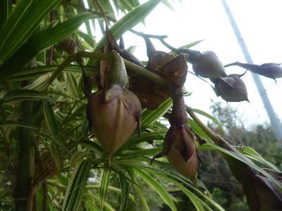
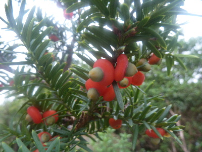
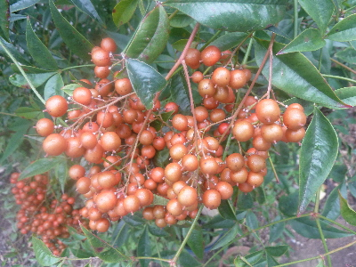
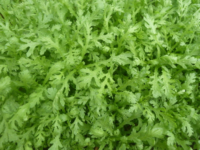

遊びで植物を育てよう
2017/10/28
台風でみかんが落ちました。
先週の台風でみかんがいくつか落ちました。

今週も台風だけど落ちないで欲しいな。
もうちょっと樹高を低くしたほうがいいかな。
【ページTOP】 【10月TOP】
【園芸TOP】
2017/10/28
ユウガオの種はいつ採れるかな。
ユウガオの種が沢山出来てるんですが、これを来年植えたら育つのかな。

今のところツルや種に水分があるので、まだ収獲には早そうです。
来年種蒔きが出来るといいな。
【ページTOP】 【10月TOP】
【園芸TOP】
2017/10/28
イチイの実って美味しいですね。
庭のイチイに実が付いて綺麗です。

食べてみたら、甘くて美味しかったです。
食べるのもいいけど、このまま鑑賞する方がいいかな。
【ページTOP】 【10月TOP】
【園芸TOP】
2017/10/28
ツワブキはもうちょっとで終わりかな。
木陰のツワブキは今でも綺麗に咲いています。

でもほとんどがもう花が終わった感じです。
ツワブキは何も管理してないで育っていますが、何かした方がいいのかな？
しても何も変わらないかな。
【ページTOP】 【10月TOP】
【園芸TOP】
2017/10/28
まだ色づいていない南天
今の時期はまだ南天の色が薄いですね。

ちょっと物足りない色です。
【ページTOP】 【10月TOP】
【園芸TOP】
2017/10/14
今年も綺麗に春菊が育ちました。
新しい春菊の芽は綺麗な色ですね。

綺麗なので毎年写真を撮ってる気がする。
今日収獲したので、この緑の絨毯はまばらになりました。
【ページTOP】 【10月TOP】
【園芸TOP】
過去の日記
【2016年10月の日記】
【2015年10月の日記】
【2014年10月の日記】
【2013年10月の日記】
【2012年10月の日記】
【ページTOP】 【10月TOP】
【園芸TOP】
畑仕事じゃないよ。
【おいしいものを食べよう。】【たくさん寝よう。】
【ソロ活をしよう!】【季節感のあることをしよう。】【動画視聴はほどほどに。】【当サイトの全てのコンテンツは無断転載禁止です。】